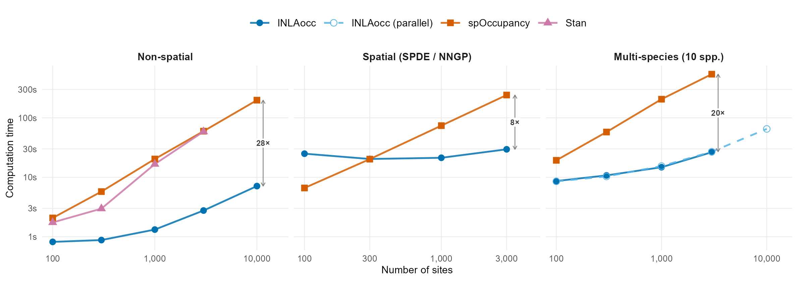
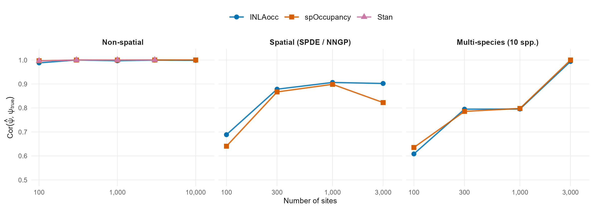
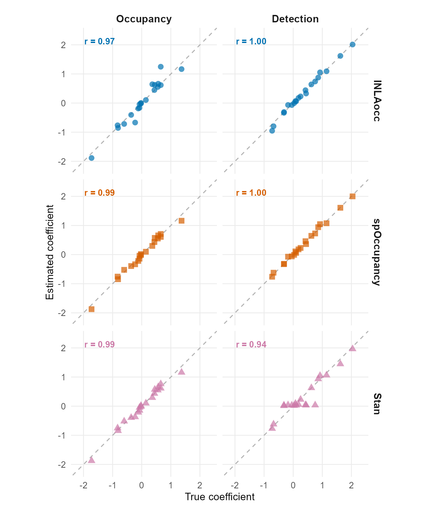

Occupancy models via INLA. A fast alternative to MCMC.
Single-species, multi-species, spatial, temporal, and integrated occupancy models through one function. EM algorithm with INLA at the M-step, plus a Gibbs-style data augmentation correction that jointly debiases both occupancy and detection coefficients.
Quick Start
library(INLAocc)
sim <- simulate_occu(N = 200, J = 4, seed = 42)
fit <- occu(~ occ_x1 + occ_x2, ~ det_x1, data = sim$data)
summary(fit)
# One-call diagnostic panel
checkModel(fit)Why INLAocc
Occupancy models separate two processes: where a species occurs and where you detect it. Fitting them with MCMC is slow, especially with spatial or multi-species structure.
At sites where you never detected the species, you don’t know if it was absent or just missed. MCMC handles this by sampling the latent states directly. INLAocc instead alternates between two steps: given current estimates, compute how likely each undetected site is to be truly occupied (E-step); then refit the occupancy and detection models with INLA using those weights (M-step). The estimates converge in a few iterations.
Plain EM (Dempster, Laird & Rubin, 1977) treats each site’s occupancy weight as fixed when estimating coefficients. The soft weights attenuate both occupancy and detection coefficients toward zero. MCMC avoids this by sampling a full present/absent vector at each iteration and fitting coefficients conditional on it.
INLAocc recovers this with a Gibbs-style data augmentation step after the EM converges. The correction alternates between sampling hard binary occupancy states from the converged posterior weights, refitting the occupancy model on the sampled states, and refitting the detection model on the subset of sites sampled as occupied. After a short burn-in, the chain stabilizes and the draws are pooled using Rubin’s combining rules (Rubin, 1987). This is the Data Augmentation algorithm (Tanner & Wong, 1987) with INLA as the conditional sampler; using it to debias EM-based occupancy models is, to our knowledge, novel.
Each submodel is fitted with INLA (Rue, Martino & Chopin, 2009), which is itself a Bayesian method: it returns full posterior marginals for every parameter, not point estimates. The EM approximation enters only in how the latent occupancy states are handled; the Gibbs correction removes the bias. In benchmarks, the corrected estimates correlate > 0.99 with full MCMC posteriors.
Speed
MCMC runtime grows linearly with the number of sites. INLAocc grows sublinearly because each EM iteration splits the occupancy model into two independent GLMMs, which INLA solves in near-linear time via sparse precision matrices. The Gibbs debiasing step adds a constant number of INLA refits but preserves this scaling advantage. MCMC cannot factorize this way because it must jointly sample the latent states alongside all parameters. For multi-species models the advantage compounds further, since INLAocc fits each species independently while MCMC must sample the full community in one chain.

Accuracy
All benchmarks use simulated data with known true occupancy probabilities. The figure below shows the correlation between estimated and true site-level occupancy across all three model types. INLAocc matches MCMC accuracy at every scale tested.

Parameter recovery
Species-specific coefficient recovery from a 10-species community model (N = 1,000 sites). Each point is one species-level coefficient; the dashed line is the 1:1 identity. The Gibbs data augmentation correction brings INLAocc’s coefficient recovery in line with full MCMC methods.
| Method | Correlation | RMSE |
|---|---|---|
| INLAocc | 0.981 | 0.149 |
| spOccupancy | 0.995 | 0.071 |
| Stan | 0.966 | 0.185 |

Features
Model Types
Model type is determined by the arguments you pass to occu():
| Call | Description |
|---|---|
occu(~ x, ~ x, data) |
Single-species |
occu(..., spatial = coords) |
Spatial (SPDE mesh) |
occu(..., temporal = "ar1") |
Multi-season with AR(1) |
occu(..., multispecies = TRUE) |
Community model |
occu(..., multispecies = TRUE, n.factors = k) |
Latent factor |
occu(..., multispecies = TRUE, n.factors = k, spatial = coords) |
Spatial factor |
occu(..., spatial = coords, svc = 1) |
Spatially-varying coefficients |
occu(..., integrated = TRUE) |
Integrated multi-source |
occu(..., multispecies = "jsdm") |
Joint SDM (no detection) |
Diagnostics
All diagnostics run on model residuals. They check whether the fitted model captured the structure in the data, or whether patterns remain unexplained.
# Does the model fit? (simulation-based, on residuals)
testUniformity(fit) # are residuals uniformly distributed?
testDispersion(fit) # more/less variance in residuals than expected?
testOutliers(fit) # sites outside the simulation envelope?
testZeroInflation(fit) # more unoccupied sites than the model predicts?
# Is there leftover spatial or temporal structure in residuals?
moranI(fit) # Moran's I on occupancy residuals
durbinWatson(fit) # lag-1 autocorrelation across time periods
variogram(fit) # semivariance of residuals vs distance
# One-call panel: QQ plot, residuals vs fitted, dispersion, correlogram
checkModel(fit)
# Before fitting: flag identifiability problems in the data
checkIdentifiability(dat)
checkIdentifiability(fit) # also works post-fit (boundary estimates, collapsed REs)Also available: ppcOccu() (posterior predictive checks), waicOccu(), AIC(), BIC(), pitResiduals(), simulate(). If DHARMa is installed, dharma(fit) creates a full DHARMa object.
Model Selection & Averaging
comp <- compare_models(null = m1, elev = m2, full = m3, criterion = "aic")
#> model AIC delta weight
#> 1 full 339.793 0.000 0.733
#> 2 elev 342.072 2.278 0.235
#> 3 null 346.010 6.216 0.033
avg <- modelAverage(null = m1, elev = m2, full = m3, criterion = "aic")
avg$psi_hat # model-averaged occupancy
avg$psi_se # unconditional SEs (Burnham & Anderson)Prediction
predict(fit, terms = "elev [0:2000 by=100]") # ggpredict-style
predict(fit, X.0 = new_covs) # design-matrix
predict_spatial(fit, newcoords, newocc.covs) # spatial interpolation
marginal_effect(fit, "elev") # response curves
richness(fit_ms) # multi-species richnessS3 Methods
coef(fit) # posterior means
confint(fit) # credible intervals
vcov(fit) # variance-covariance
tidy(fit) # broom-compatible data.frame
glance(fit) # model-level summary
ranef(fit) # random effect summaries
update(fit, ~ . - x2) # refit with modified formula
logLik(fit) # observed-data log-likelihood
nobs(fit) # number of observationsInstallation
INLAocc requires INLA, which is not on CRAN:
install.packages("INLA", repos = c(INLA = "https://inla.r-inla-download.org/R/stable"), dep = TRUE)Then install the development version:
# install.packages("pak")
pak::pak("gcol33/INLAocc")Usage
From a data.frame
occu_data() takes a long-format data.frame (one row per site-visit) and builds the list that occu() expects. Three columns are required: a detection column (0/1/NA), a site ID, and a visit number. Everything else is treated as a covariate. Columns that are constant within a site become occupancy covariates; columns that vary become detection covariates.
dat <- df |> occu_data(y = "detected", site = "site", visit = "visit")
fit <- occu(~ elev, ~ effort, data = dat)How NAs are handled:
- Detection matrix (y): NA means “not surveyed.” These cells are excluded from the likelihood. Sites with fewer visits than the maximum are NA-filled automatically, so unequal survey effort works out of the box.
- Covariates: NAs in occupancy covariates drop the entire site. NAs in detection covariates drop that visit. A warning is issued at data formatting time so you know before fitting.
Single-species with random effects
sim <- simulate_occu(N = 200, J = 4, seed = 42)
sim$data$occ.covs$region <- sample(1:5, 200, replace = TRUE)
fit <- occu(
~ occ_x1 + occ_x2 + (1 | region),
~ det_x1,
data = sim$data
)
summary(fit)Spatial model
sim <- simulate_occu(N = 200, J = 4, spatial_range = 0.2, seed = 123)
# Auto-scaled mesh from coordinate extent
fit <- occu(~ occ_x1, ~ det_x1, data = sim$data, spatial = sim$data$coords)
# Control mesh resolution (units match your CRS; metres for UTM)
fit <- occu(~ occ_x1, ~ det_x1, data = sim$data,
spatial = sim$data$coords,
spde.args = list(max.edge = c(5000, 15000)))
# Or build the spatial object explicitly
sp <- occu_spatial(coords,
max.edge = c(5000, 15000), # triangle edges in CRS units
cutoff = 1000, # min distance between nodes
prior.range = c(20000, 0.5), # P(range < 20km) = 0.5
prior.sigma = c(1, 0.5)) # P(sigma > 1) = 0.5
fit <- occu(~ occ_x1, ~ det_x1, data = sim$data, spatial = sp)
moranI(fit) # check residual spatial autocorrelationModel averaging
m1 <- occu(~ 1, ~ 1, data = sim$data)
m2 <- occu(~ occ_x1, ~ det_x1, data = sim$data)
m3 <- occu(~ occ_x1 + occ_x2, ~ det_x1, data = sim$data)
avg <- modelAverage(null = m1, elev = m2, full = m3)Coming from spOccupancy?
INLAocc accepts the same list(y, occ.covs, det.covs, coords) data format. The main differences: one occu() function instead of separate model functions, no MCMC tuning parameters, and random slopes are supported in addition to random intercepts (spOccupancy ≤ 0.8.1 supports random intercepts only).
Support
“Software is like sex: it’s better when it’s free.” — Linus Torvalds
I’m a PhD student who builds R packages in my free time because I believe good tools should be free and open. I started these projects for my own work and figured others might find them useful too.
If this package saved you some time, buying me a coffee is a nice way to say thanks. It helps with my coffee addiction.
References
- Dempster, A. P., Laird, N. M. & Rubin, D. B. (1977). Maximum likelihood from incomplete data via the EM algorithm. Journal of the Royal Statistical Society: Series B, 39(1), 1–38.
- Tanner, M. A. & Wong, W. H. (1987). The calculation of posterior distributions by data augmentation. Journal of the American Statistical Association, 82(398), 528–540.
- Rubin, D. B. (1987). Multiple Imputation for Nonresponse in Surveys. Wiley.
- Rue, H., Martino, S. & Chopin, N. (2009). Approximate Bayesian inference for latent Gaussian models by using integrated nested Laplace approximations. Journal of the Royal Statistical Society: Series B, 71(2), 319–392.